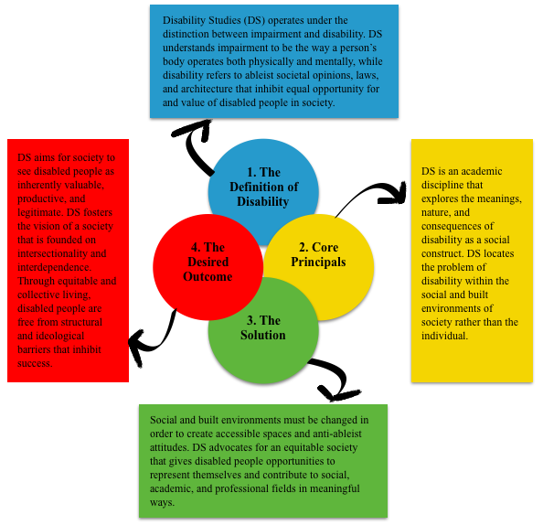

As a relatively new field founded in 1986, Disability Studies grew out of disabled peoples’ struggle to obtain civil rights and social inclusion (Simpson and Thomas, 2015). Disability Studies refutes the medical model of disability, which locates disability within the body of the impaired individual. The discipline responds to the medical model through the implementation of the social model of disability, making a distinction between disability and impairment. The social model emphasizes that impairment is not the cause of the difficulties that disabled people encounter in life; rather, it is the social relations of non-disabled people to those with impairments that create ableist barriers (Simpson and Thomas, 2015). These ableist barriers are manifested within the education and medical systems, media representation, legal frameworks, and transportation accessibility, among others (Oliver, 2013). Disability Studies strives to dismantle these ableist barriers through the re-appropriation of disability. Re-appropriating disability is achieved through a person’s ability to take back their experience of being disabled without outside pressures or perceptions, and reimagining disability as valuable within society.
The re-appropriation of disability is a rights-based strategy used to address the root of ableist inequality, with the hope of developing a comprehensive disability justice framework (Berne, 2015). Disability justice activists, organizers, and cultural workers understand that able-bodied supremacy has been formed in relation to other systems of domination and exploitation (Berne, 2015). As a result, Disability Studies makes intersectionality a core principle of their work. Disability Studies scholar, Mia Mingus, speaks about the importance of interdependency achieved through intersectionality in the effort to achieve equal rights. Mingus notes that because disability rights are a collective effort it is only through the recognition of a variety of lived experiences within the disabled community that re-appropriation can be implemented fully and truthfully (Titchkosky, 2011). Access is understood as a communal responsibility requiring interdependence, opposed to an individual burden.
The implementation of intersectionality within Disability Studies fosters a collective approach to access. Recognized as an embodied practice, the collective approach allows for the development of disability justice by questioning the meanings of legitimacy and productivity, as well as critiquing the structural and ideological barriers created by non-disabled people and institutions (Titchkosky, 2011). Disability Studies uses these tools to create a society that views disability as valuable, productive, and legitimate.
